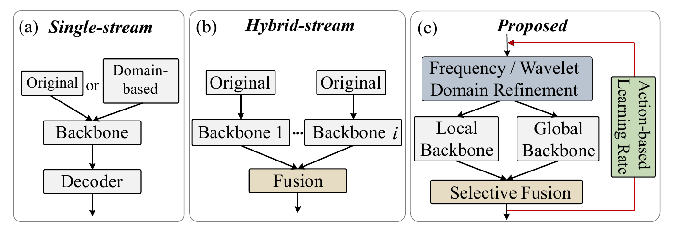
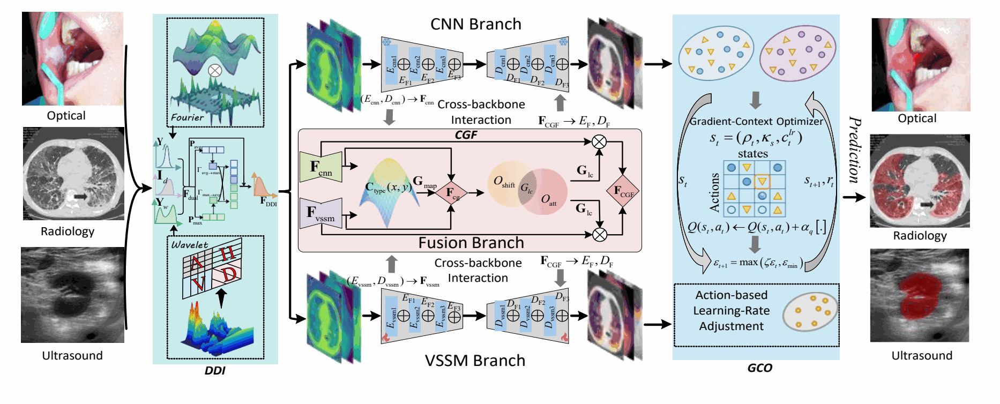
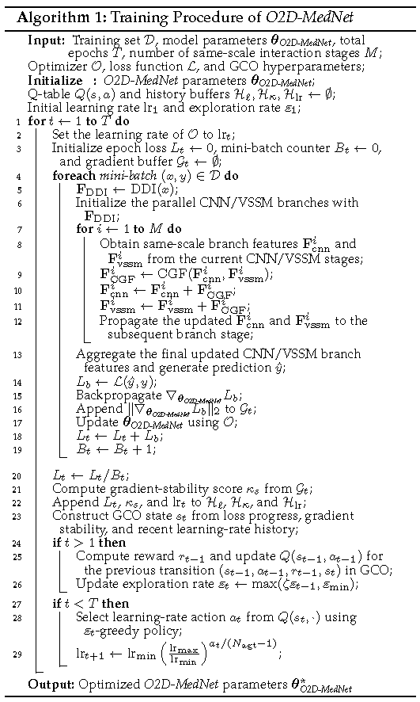
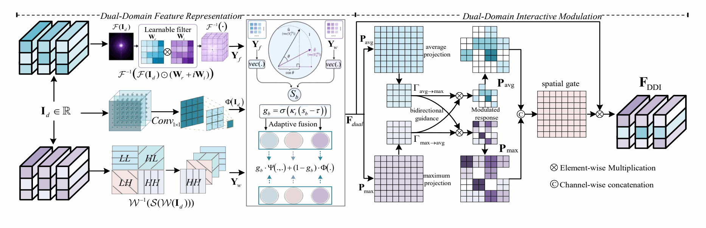
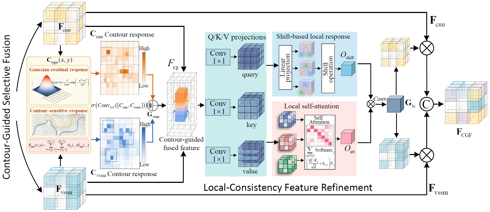
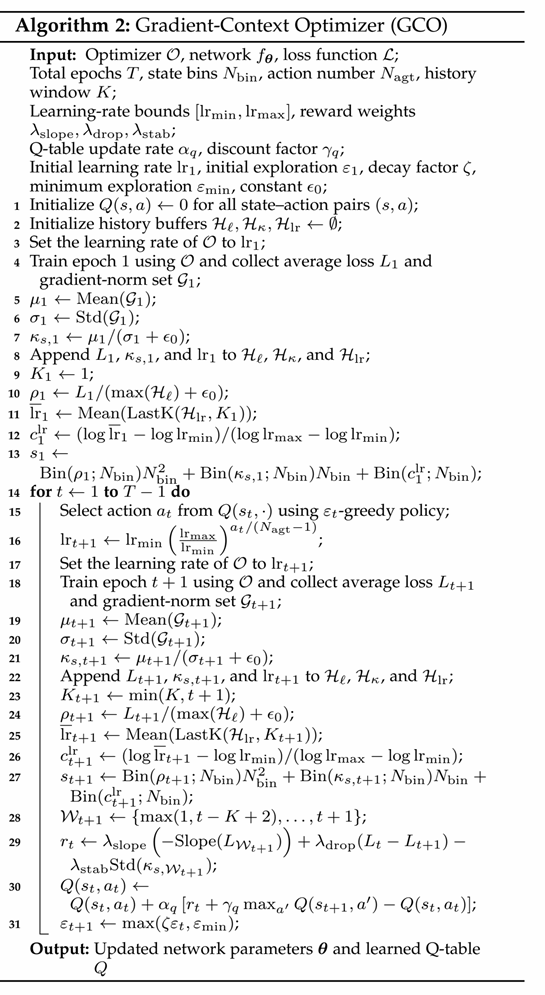
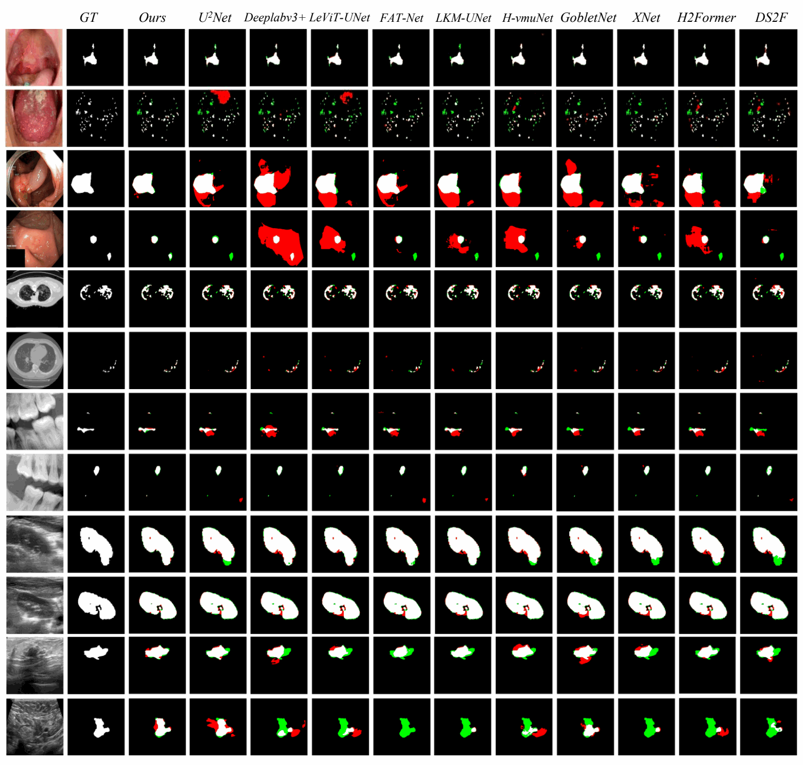

Will update the details of this work soon...
Abstract- Medical image segmentation (MIS) remains challenging due to composite degradations and multi-scale geometric variations, which jointly impair lesion-background separability, structural consistency, and optimization stability. Existing single-stream frameworks entangle heterogeneous cues within a single representation pathway, while hybrid-stream approaches often rely on generic or static fusion, limiting effective coordination across domains and failing to explicitly address optimization instability. To overcome these limitations, we propose a new optimization-aware dual-domain framework for MIS (O2D-MedNet). First, a dynamic dual-domain interaction (DDI) module integrates Fourier- and Wavelet-domain features to suppress degradation-sensitive responses while preserving structural and fine-detail information. Second, a cross-backbone contour-guided fusion (CGF) module enables selective interaction between CNN-based local detail modeling and visual state-space-based global structure modeling, improving boundary accuracy and representation consistency. Third, a gradient-context optimization (GCO) strategy stabilizes training by adaptively adjusting learning dynamics based on loss trends and gradient statistics, mitigating instability caused by class imbalance and heterogeneous sample difficulty. Extensive experiments on six benchmarks demonstrate consistent improvements over state-of-the-art MIS methods across multiple imaging modalities. Further analyses confirm enhanced sensitivity, structural consistency, and optimization stability, validating the effectiveness of the proposed O2D-MedNet for robust MIS under heterogeneous conditions.
Index Terms—Medical image segmentation, dual-domain modeling, cross-backbone fusion, optimization stability
Medical image segmentation assigns semantic labels to pixels or voxels for the accurate delineation of lesions and anatomical structures, supporting disease screening, diagnosis, treatment planning, and longitudinal assessment. However, the growing volume and diversity of optical, radiological, and ultrasound data make manual inspection increasingly time-consuming and error-prone.
Robust segmentation remains challenging because composite degradations, including noise, artifacts, and specular reflections, often coexist with multi-scale variations in anatomical size, shape, and location. These factors jointly reduce lesion-background separability, disrupt structural consistency, destabilize optimization, and make it difficult to preserve fine boundaries while maintaining global coherence.
Existing single-stream methods entangle degradation suppression, representation learning, and optimization within one pathway, while hybrid-stream approaches commonly rely on static or heuristic feature fusion. This coupled treatment limits adaptive coordination among degradation-sensitive responses, local details, global structures, and training dynamics under heterogeneous imaging conditions. O2D-MedNet addresses these limitations through a progressive design that explicitly decouples degradation suppression, representation interaction, and optimization dynamics.

O2D-MedNet follows a progressive design that explicitly decouples degradation suppression, representation learning, and optimization dynamics. DDI first refines the input through complementary Fourier- and Wavelet-domain processing; parallel CNN and VSSM branches then model local details and global structure, CGF enables selective cross-backbone interaction, and GCO adapts training behavior according to gradient context. Algorithm 1 summarizes the overall training and inference procedures.


DDI jointly exploits Fourier-domain global spectral structure and Wavelet-domain localized multi-resolution detail to improve feature separability before high-level modeling. Similarity-aware sample gating and bidirectional spatial modulation suppress degradation-sensitive responses while preserving structural consistency and boundary-relevant cues.

CGF performs selective, structure-aware interaction between CNN local-detail features and VSSM global-structure representations at corresponding network stages. Gaussian-residual contour responses guide spatial fusion, while shift-based and local-attention refinement produces local-consistency modulation and stage-specific features that are reinjected into both branches.

GCO formulates learning-rate scheduling as an adaptive decision process driven by gradient context. At each epoch, loss progress, gradient stability, and recent learning-rate history define a discrete state; an online epsilon-greedy Q-learning controller selects the next learning rate and learns from loss trends, short-term loss reduction, and gradient-context stability, as provided in Algorithm 2.

The experiments evaluate three aspects of O2D-MedNet: robustness under heterogeneous degradations, the effectiveness of local-global decoupling and selective cross-backbone interaction, and the contribution of optimization-aware training to convergence stability.
Datasets: Six 2D medical image segmentation benchmarks spanning three imaging modalities are used:
Implementation. O2D-MedNet is implemented in PyTorch and trained with Adam using an initial learning rate of 1 × 10-3 and a weight decay of 1 × 10-2. Images are resized to 224 × 224, replicated to three channels when necessary, and normalized to [0, 1]. Five-fold cross-validation is used, with one fold for testing and four folds for training. Models are optimized with BCEWithLogitsLoss for 500 epochs using a batch size of 4, while GCO adaptively controls the learning-rate schedule. Experiments are conducted on an Intel i9-10980XE CPU and an NVIDIA GeForce RTX 4090 GPU.
Evaluation metrics. Dice and mIoU measure region overlap, Sensitivity evaluates foreground detection, and Betti Error measures topological consistency. The benchmark table below reports mean ± standard deviation across five-fold cross-validation; all values are percentages.
O2D-MedNet reports the highest mIoU and Dice scores across all six benchmarks in the manuscript comparison.
Navigation: Click a model name to jump to its corresponding reference below. Scroll horizontally to view all six datasets on smaller screens.
Table 1. Quantitative comparison in terms of mIoU and Dice on the Oral, Kvasir-SEG, COVID-19, MLUA, CT2US, and BUSI datasets. Comparison methods are grouped into Reference Baselines, Single-stream Frameworks, and Hybrid-stream Frameworks. The best and second-best results in each column are highlighted in red and blue, respectively.
| Group | Method | Optical RGB Dataset | Radiological Dataset | Ultrasound Dataset | |||||||||
|---|---|---|---|---|---|---|---|---|---|---|---|---|---|
| Oral | Kvasir-SEG | COVID-19 | MLUA | CT2US | BUSI | ||||||||
| mIoU ↑ | Dice ↑ | mIoU ↑ | Dice ↑ | mIoU ↑ | Dice ↑ | mIoU ↑ | Dice ↑ | mIoU ↑ | Dice ↑ | mIoU ↑ | Dice ↑ | ||
| Reference Baselines |
U2Net | 82.3 ± 3.1 | 90.3 ± 1.7 | 78.5 ± 3.8 | 88.0 ± 3.2 | 79.4 ± 3.8 | 88.5 ± 3.3 | 59.5 ± 5.8 | 68.5 ± 5.2 | 95.3 ± 4.0 | 97.6 ± 2.7 | 61.9 ± 4.1 | 76.4 ± 3.6 |
| Deeplabv3+ | 81.6 ± 2.3 | 89.8 ± 1.4 | 50.1 ± 6.7 | 66.8 ± 6.1 | 78.3 ± 4.6 | 87.8 ± 4.3 | 59.1 ± 4.8 | 74.3 ± 4.6 | 95.1 ± 3.9 | 97.5 ± 1.7 | 61.1 ± 5.6 | 75.8 ± 5.6 | |
| SFM | 70.0 ± 3.0 | 82.4 ± 2.4 | 68.8 ± 5.1 | 81.5 ± 4.7 | 75.4 ± 5.3 | 85.9 ± 3.2 | 45.6 ± 6.2 | 62.6 ± 5.6 | 94.4 ± 2.1 | 97.1 ± 1.4 | 58.7 ± 3.9 | 74.0 ± 3.6 | |
| TherNet | 82.5 ± 2.9 | 90.4 ± 1.9 | 74.4 ± 3.8 | 85.3 ± 2.9 | 78.3 ± 2.9 | 87.8 ± 2.5 | 46.9 ± 6.7 | 63.8 ± 6.7 | 95.0 ± 4.1 | 97.4 ± 2.2 | 50.9 ± 6.8 | 67.4 ± 6.4 | |
| MWCNN | 78.6 ± 3.5 | 88.0 ± 2.6 | 70.8 ± 4.6 | 82.9 ± 3.6 | 71.4 ± 4.1 | 83.3 ± 3.4 | 40.8 ± 7.2 | 58.0 ± 6.8 | 94.8 ± 3.8 | 97.3 ± 1.9 | 40.5 ± 7.6 | 57.6 ± 7.3 | |
| Single-stream Frameworks |
BCDU-Net | 85.8 ± 2.6 | 92.3 ± 1.6 | 72.6 ± 4.7 | 84.1 ± 3.8 | 78.8 ± 3.0 | 88.1 ± 2.7 | 58.2 ± 5.7 | 73.6 ± 4.4 | 94.4 ± 3.3 | 97.1 ± 2.1 | 58.1 ± 5.3 | 73.5 ± 4.8 |
| MTG-Net | 73.1 ± 7.4 | 81.2 ± 4.0 | 68.5 ± 8.5 | 74.4 ± 5.9 | 72.4 ± 6.7 | 76.6 ± 4.8 | 59.6 ± 6.9 | 74.7 ± 6.1 | 74.1 ± 6.0 | 85.1 ± 2.9 | 48.2 ± 7.9 | 55.3 ± 6.4 | |
| MedT | 68.4 ± 5.4 | 75.2 ± 1.9 | 67.9 ± 4.2 | 80.8 ± 3.9 | 76.8 ± 2.8 | 86.9 ± 2.5 | 54.3 ± 6.6 | 61.0 ± 4.9 | 69.3 ± 6.6 | 81.8 ± 4.3 | 50.2 ± 6.6 | 66.8 ± 6.0 | |
| FAT-Net | 83.3 ± 3.5 | 90.9 ± 2.2 | 78.0 ± 3.6 | 87.6 ± 3.6 | 78.1 ± 4.6 | 87.7 ± 3.6 | 60.4 ± 4.9 | 75.3 ± 5.0 | 95.3 ± 3.5 | 97.6 ± 2.1 | 58.6 ± 4.6 | 73.9 ± 4.2 | |
| MISSFormer | 67.5 ± 2.5 | 80.6 ± 1.6 | 75.8 ± 2.3 | 86.2 ± 2.3 | 76.4 ± 3.1 | 86.6 ± 2.8 | 44.9 ± 6.8 | 62.0 ± 6.3 | 94.3 ± 3.7 | 97.0 ± 0.9 | 55.9 ± 4.1 | 71.7 ± 3.6 | |
| LeViTUNet | 86.9 ± 2.4 | 93.0 ± 1.2 | 76.5 ± 3.0 | 86.7 ± 2.5 | 78.6 ± 3.6 | 88.0 ± 2.9 | 59.4 ± 6.3 | 74.5 ± 5.5 | 95.2 ± 3.2 | 97.5 ± 1.8 | 60.9 ± 5.3 | 75.7 ± 4.1 | |
| Swin-UNet | 62.1 ± 5.1 | 69.2 ± 3.8 | 69.9 ± 7.0 | 77.1 ± 6.2 | 72.1 ± 5.5 | 83.8 ± 5.8 | 43.2 ± 6.6 | 53.3 ± 5.7 | 92.1 ± 5.5 | 95.8 ± 2.5 | 46.3 ± 8.5 | 51.7 ± 8.3 | |
| CyCoSeg | 66.5 ± 4.5 | 79.9 ± 3.0 | 68.6 ± 4.2 | 81.3 ± 3.1 | 75.2 ± 4.7 | 85.9 ± 4.1 | 47.1 ± 7.1 | 64.0 ± 5.8 | 94.1 ± 3.4 | 96.9 ± 1.6 | 57.9 ± 5.9 | 73.3 ± 4.7 | |
| Mamba-UNet | 80.9 ± 3.0 | 89.4 ± 1.8 | 78.1 ± 4.5 | 87.7 ± 4.2 | 76.0 ± 5.5 | 86.3 ± 3.1 | 58.4 ± 5.6 | 73.7 ± 5.2 | 94.7 ± 3.8 | 97.3 ± 2.0 | 61.6 ± 5.2 | 76.2 ± 5.1 | |
| UltraLightVM | 79.4 ± 3.7 | 88.5 ± 2.0 | 79.6 ± 3.9 | 88.6 ± 3.7 | 78.9 ± 3.9 | 88.2 ± 5.3 | 60.4 ± 4.8 | 75.3 ± 4.4 | 94.6 ± 4.5 | 97.2 ± 2.5 | 54.8 ± 4.2 | 70.8 ± 3.7 | |
| LKM-UNet | 86.4 ± 2.2 | 92.7 ± 1.5 | 79.5 ± 3.3 | 88.6 ± 2.8 | 79.3 ± 3.6 | 88.4 ± 3.4 | 59.5 ± 6.4 | 74.6 ± 5.5 | 95.7 ± 2.9 | 97.8 ± 2.2 | 60.2 ± 6.6 | 75.1 ± 6.3 | |
| H-vmuNet | 83.1 ± 2.5 | 90.8 ± 1.8 | 72.7 ± 4.7 | 84.2 ± 3.6 | 77.5 ± 3.2 | 87.3 ± 2.5 | 52.5 ± 5.6 | 68.9 ± 4.7 | 95.3 ± 3.3 | 97.6 ± 2.1 | 63.1 ± 5.8 | 77.4 ± 5.3 | |
| Mamba-Sea | 75.7 ± 6.4 | 83.1 ± 4.0 | 75.4 ± 7.3 | 82.3 ± 5.7 | 63.4 ± 5.4 | 73.6 ± 6.4 | 55.5 ± 5.9 | 71.4 ± 5.3 | 94.9 ± 1.8 | 97.3 ± 1.3 | 54.2 ± 8.5 | 61.0 ± 8.8 | |
| FusionNet | 77.3 ± 4.3 | 87.2 ± 2.4 | 78.4 ± 2.9 | 88.1 ± 2.4 | 77.1 ± 3.6 | 87.1 ± 4.1 | 60.0 ± 6.0 | 75.0 ± 4.8 | 95.2 ± 1.5 | 97.5 ± 1.0 | 61.6 ± 4.6 | 76.3 ± 4.2 | |
| MBP-SSNet | 81.5 ± 2.1 | 89.8 ± 2.1 | 71.1 ± 3.1 | 83.1 ± 2.6 | 75.4 ± 3.7 | 85.9 ± 3.0 | 63.3 ± 5.8 | 77.5 ± 5.0 | 92.1 ± 3.5 | 95.9 ± 2.5 | 56.2 ± 4.8 | 72.0 ± 4.5 | |
| EAG-SAE-ESTF | 74.9 ± 2.5 | 85.6 ± 1.8 | 79.0 ± 2.5 | 88.3 ± 2.2 | 77.7 ± 2.8 | 87.4 ± 2.6 | 61.1 ± 4.9 | 75.9 ± 4.2 | 95.4 ± 2.8 | 97.6 ± 1.1 | 63.7 ± 4.0 | 77.8 ± 3.6 | |
| GobletNet | 85.3 ± 2.2 | 92.0 ± 1.3 | 80.0 ± 2.8 | 88.9 ± 2.2 | 79.0 ± 2.8 | 88.2 ± 2.3 | 55.1 ± 4.9 | 71.1 ± 4.5 | 95.0 ± 2.5 | 97.4 ± 1.1 | 65.3 ± 3.8 | 79.0 ± 4.2 | |
| MADGNet | 82.4 ± 2.6 | 90.3 ± 1.4 | 77.6 ± 3.3 | 87.4 ± 2.9 | 78.9 ± 4.3 | 88.2 ± 4.6 | 61.3 ± 5.1 | 76.0 ± 3.6 | 95.1 ± 3.0 | 97.5 ± 2.1 | 60.8 ± 3.7 | 75.6 ± 3.1 | |
| FFTMed | 51.9 ± 4.9 | 68.4 ± 3.0 | 51.4 ± 5.5 | 67.9 ± 6.1 | 69.9 ± 5.9 | 82.3 ± 4.5 | 59.1 ± 5.7 | 65.1 ± 5.3 | 93.6 ± 1.9 | 96.7 ± 1.9 | 54.6 ± 4.3 | 70.6 ± 4.7 | |
| CSWin-UNet | 66.4 ± 5.3 | 70.2 ± 2.0 | 70.9 ± 7.3 | 78.6 ± 5.7 | 59.9 ± 3.5 | 71.2 ± 5.4 | 55.6 ± 5.4 | 71.4 ± 4.6 | 80.5 ± 4.2 | 85.4 ± 3.7 | 58.8 ± 3.9 | 74.1 ± 3.5 | |
| Hybrid-stream Frameworks |
TransFuse | 83.1 ± 2.4 | 90.7 ± 1.6 | 78.1 ± 2.6 | 87.7 ± 2.4 | 78.2 ± 4.6 | 87.8 ± 3.7 | 60.3 ± 4.8 | 75.2 ± 4.2 | 95.1 ± 3.1 | 97.4 ± 2.2 | 62.7 ± 5.3 | 77.1 ± 5.1 |
| H2Former | 80.1 ± 2.7 | 88.9 ± 1.7 | 72.3 ± 3.6 | 83.9 ± 2.7 | 78.2 ± 2.9 | 87.7 ± 2.6 | 59.7 ± 6.7 | 74.7 ± 5.3 | 95.3 ± 2.6 | 97.6 ± 2.1 | 57.3 ± 5.7 | 72.9 ± 5.9 | |
| MambaEviScrib | 76.8 ± 2.7 | 86.9 ± 1.4 | 78.8 ± 3.5 | 88.2 ± 3.1 | 77.7 ± 3.0 | 87.5 ± 2.4 | 59.7 ± 5.6 | 74.8 ± 5.1 | 95.2 ± 3.3 | 97.5 ± 1.6 | 60.8 ± 5.0 | 75.6 ± 4.3 | |
| XNet | 85.0 ± 2.7 | 91.9 ± 2.0 | 79.0 ± 3.2 | 88.2 ± 3.0 | 78.9 ± 3.4 | 88.2 ± 3.7 | 64.1 ± 4.8 | 78.1 ± 4.1 | 95.3 ± 3.1 | 97.6 ± 1.5 | 63.1 ± 6.5 | 77.4 ± 5.8 | |
| DS2F | 78.9 ± 2.1 | 88.2 ± 1.5 | 75.8 ± 2.9 | 86.2 ± 2.6 | 78.1 ± 3.3 | 87.7 ± 2.5 | 50.9 ± 6.3 | 67.5 ± 5.3 | 94.5 ± 2.3 | 97.1 ± 1.7 | 60.4 ± 4.6 | 75.3 ± 4.2 | |
| Ours | O2D-MedNet | 91.9 ± 1.9 | 96.8 ± 1.1 | 83.4 ± 2.3 | 90.9 ± 2.1 | 82.6 ± 2.5 | 90.4 ± 2.1 | 67.9 ± 4.5 | 80.9 ± 3.1 | 96.2 ± 1.2 | 98.0 ± 0.9 | 69.3 ± 3.5 | 81.9 ± 3.1 |
Across optical, radiological, and ultrasound images, O2D-MedNet produces predictions that are more consistent with the ground truth, with cleaner boundaries, fewer false positives, and fewer missed regions.

For optical RGB images, the model suppresses interference from illumination variations and specular reflections. For radiological images, it better preserves weak and blurred lesion boundaries. For ultrasound images, it reduces errors associated with speckle noise, intensity inhomogeneity, and complex textures.
Reference Baselines (5)
[U2Net] X. Qin, Z. Zhang, C. Huang, M. Dehghan, O. R. Zaiane, and M. Jagersand, “U2-Net: Going Deeper with Nested U-structure for Salient Object Detection,” Elsevier Pattern recognition, vol. 106, pp. 1-12, 2020. [paper, implementation]
[Deeplabv3+] L.-C. Chen, Y. Zhu, G. Papandreou, F. Schroff, and H. Adam, “Encoder-Decoder With Atrous Separable Convolution for Semantic Image Segmentation,” in Proceedings of the European conference on computer vision (ECCV), 2018, pp. 801-818. [paper, implementation]
[SFM] L. Chen, Y. Fu, L. Gu, D. Zheng, and J. Dai, “Spatial Frequency Modulation for Semantic Segmentation,” IEEE Transactions on Pattern Analysis and Machine Intelligence, vol. 47, no. 11, pp. 9767-9784, 2025. [paper, implementation]
[TherNet] J. Chen, S. Shu, C. Meng, and X. Bai, “TherNet: Thermal Segmentation Network Harnessing Physical Properties,” IEEE Transactions on Pattern Analysis and Machine Intelligence, vol. 47, no. 12, pp. 11768-11784, 2025. [paper, implementation]
[MWCNN] P. Liu, H. Zhang, K. Zhang, L. Lin, and W. Zuo, “Multi-Level Wavelet-CNN for Image Restoration,” in Proceedings of the IEEE/CVF International Conference on Computer Vision (CVPR) Workshops, 2018, pp. 773-782. [paper, implementation]
Single-stream Frameworks (20)
[BCDU-Net] R. Azad, M. Asadi-Aghbolaghi, M. Fathy, and S. Escalera, “Bi-Directional ConvLSTM U-Net with Densley Connected Convolutions,” in Proceedings of the IEEE/CVF International Conference on Computer Vision (ICCV) Workshops, 2019, pp. 1-10. [paper, implementation]
[MTG-Net] T. Chen, D. Zhang, D. Chen, H. Fu, K. Jin, S. Wang, L. D. Cohen, Y. Zhao, Q. Yi, and J. Zhang, “Neovascularization Segmentation via a Multilateral Interaction-Enhanced Graph Convolutional Network,” IEEE Transactions on Pattern Analysis and Machine Intelligence, vol. 47, no. 12, pp. 11107-11123, 2025. [paper, implementation]
[MedT] J. M. J. Valanarasu, P. Oza, I. Hacihaliloglu, and V. M. Patel, “Medical Transformer: Gated Axial-Attention for Medical Image Segmentation,” in Springer International Conference on Medical Image Computing and Computer Assisted Intervention (MICCAI), 2021, pp. 36-46. [paper, implementation]
[FAT-Net] H. Wu, S. Chen, G. Chen, W. Wang, B. Lei, and Z. Wen, “FAT-Net: Feature Adaptive Transformers for Automated Skin Lesion Segmentation,” Elsevier Medical Image Analysis, vol. 76, pp. 1-14, 2022. [paper, implementation]
[MISSFormer] X. Huang, Z. Deng, D. Li, X. Yuan, and Y. Fu, “MISSFormer: An Effective Transformer for 2D Medical Image Segmentation,” IEEE Transactions on Medical Imaging, vol. 42, no. 5, pp. 1484-1494, 2023. [paper, implementation]
[LeViT-UNet] G. Xu, X. Zhang, X. He, and X. Wu, “LeViT-UNet: Make Faster Encoders with Transformer for Medical Image Segmentation,” in Springer Chinese Conference on Pattern Recognition and Computer Vision (PRCV), 2023, pp. 42-53. [paper, implementation]
[Swin-UNet] H. Cao, Y. Wang, J. Chen, D. Jiang, X. Zhang, Q. Tian, and M. Wang, “Swin-Unet: Unet-Like Pure Transformer for Medical Image Segmentation,” in Springer European Conference on Computer Vision (ECCV), 2022, pp. 205-218. [paper, implementation]
[CyCoSeg] D. O. Medley, C. Santiago, and J. C. Nascimento, “CyCoSeg: A Cyclic Collaborative Framework for Automated Medical Image Segmentation,” IEEE Transactions on Pattern Analysis and Machine Intelligence, vol. 44, no. 11, pp. 8167-8182, 2021. [paper, implementation]
[Mamba-UNet] Z. Wang, J.-Q. Zheng, Y. Zhang, G. Cui, and L. Li, “Mamba-UNet: UNet-Like Pure Visual Mamba for Medical Image Segmentation,” arXiv preprint arXiv:2402.05079, 2024. [paper, implementation]
[UltraLight VM] R. Wu, Y. Liu, G. Ning, P. Liang, and Q. Chang, “UltraLight VM-UNet: Parallel Vision Mamba Significantly Reduces Parameters for Skin Lesion Segmentation,” Elsevier Patterns, vol. 6, no. 11, 2025. [paper, implementation]
[LKM-UNet] J. Wang, J. Chen, D. Chen, and J. Wu, “LKM-UNet: Large Kernel Vision Mamba UNet for Medical Image Segmentation,” in Springer International Conference on Medical Image Computing and Computer Assisted Intervention (MICCAI), 2024, pp. 360-370. [paper, implementation]
[H-vmuNet] R. Wu, Y. Liu, P. Liang, and Q. Chang, “H-vmuNet: High-order Vision Mamba UNet for Medical Image Segmentation,” Elsevier Neurocomputing, vol. 624, pp. 1-11, 2025. [paper, implementation]
[Mamba-Sea] Z. Cheng, J. Guo, J. Zhang, L. Qi, L. Zhou, Y. Shi, and Y. Gao, “Mamba-Sea: A Mamba-Based Framework With Global-to-Local Sequence Augmentation for Generalizable Medical Image Segmentation,” IEEE Transactions on Medical Imaging, vol. 44, no. 9, pp. 3741-3755, 2025. [paper, implementation]
[FusionNet] T. M. Quan, D. G. C. Hildebrand, and W.-K. Jeong, “FusionNet: A Deep Fully Residual Convolutional Neural Network for Image Segmentation in Connectomics,” Frontiers in Computer Science, vol. 3, pp. 1-12, 2021. [paper, implementation]
[MBP-SSNet] Y. Wang, Y. Zhang, L. Zhang, Y. Xu, R. Feng, H. Cai, J. Xue, Z. Zhao, X. Guo, Y. Wei et al., “Multi-Bottleneck Progressive Propulsion Network for Medical Image Semantic Segmentation With Integrated Macro-Micro Dual-Stage Feature Enhancement and Refinement,” Elsevier Expert Systems with Applications, vol. 252, pp. 1-25, 2024. [paper, implementation]
[EAG-SAE-ESTF] X. Zhang, S. Wang, W. Lv, M. Zhou, S. Li, J. Yang, M. Huang, Y. Su, and T. Shen, “EAG-SAE-ESTF: An Entropy-Aware Gated Network With Scale-Adaptive Enhancement and Elastic Spatial Topology Fusion for Coronary Artery Segmentation,” Elsevier Information Fusion, pp. 1-18, 2026. [paper, implementation]
[GobletNet] Y. Zhou, L. Li, C. Wang, L. Song, and G. Yang, “GobletNet: Wavelet-Based High-Frequency Fusion Network for Semantic Segmentation of Electron Microscopy Images,” IEEE Transactions on Medical Imaging, vol. 44, no. 2, pp. 1058-1069, 2025. [paper, implementation]
[MADGNet] J.-H. Nam, N. S. Syazwany, S. J. Kim, and S.-C. Lee, “Modality-agnostic domain generalizable medical image segmentation by multi-frequency in multi-scale attention,” in Proceedings of the IEEE/CVF Conference on Computer Vision and Pattern Recognition (CVPR), 2024, pp. 11480-11491. [paper, implementation]
[FFTMed] V. T. Pham, M. H. Ha, B. V. Bui, and T. S. Hy, “FFTMed: Leveraging Fast-Fourier Transform for a Lightweight and Adversarial-Resilient Medical Image Segmentation Framework,” Scientific Reports, vol. 15, no. 1, p. 37879, 2025. [paper, implementation]
[CSWin-UNet] X. Liu, P. Gao, T. Yu, F. Wang, and R.-Y. Yuan, “CSWin-UNet: Transformer UNet with Cross-Shaped Windows for Medical Image Segmentation,” Elsevier Information Fusion, vol. 113, pp. 1-12, 2025. [paper, implementation]
Hybrid-stream Frameworks (5)
[TransFuse] Y. Zhang, H. Liu, and Q. Hu, “TransFuse: Fusing Transformers and CNNs for Medical Image Segmentation,” in Springer International conference on medical image computing and computer-assisted intervention, 2021, pp. 14-24. [paper, implementation]
[H2Former] A. He, K. Wang, T. Li, C. Du, S. Xia, and H. Fu, “H2Former: An Efficient Hierarchical Hybrid Transformer for Medical Image Segmentation,” IEEE Transactions on Medical Imaging, vol. 42, no. 9, pp. 2763-2775, 2023. [paper, implementation]
[MambaEviScrib] X. Han, X. Li, J. Shang, Y. Liu, K. Chen, S. Xu, Q. Liu, and Q. Zhang, “MambaEviScrib: Mamba and Evidence-Guided Consistency Enhance CNN Robustness for Scribble-Based Weakly Supervised Ultrasound Image Segmentation,” Elsevier Information Fusion, vol. 126, p. 103590, 2026. [paper, implementation]
[XNet] Y. Zhou, J. Huang, C. Wang, L. Song, and G. Yang, “XNet: Wavelet-Based Low and High Frequency Fusion Networks for Fully- and Semi-Supervised Semantic Segmentation of Biomedical Images,” in Proceedings of the IEEE/CVF International Conference on Computer Vision (CVPR), 2023, pp. 21085-21096. [paper, implementation]
[DS2F] Z. Qiu, Y. Hu, X. Chen, D. Zeng, Q. Hu, and J. Liu, “Rethinking Dual-Stream Super-Resolution Semantic Learning in Medical Image Segmentation,” IEEE Transactions on Pattern Analysis and Machine Intelligence, vol. 46, no. 1, pp. 451-464, 2024. [paper, implementation]